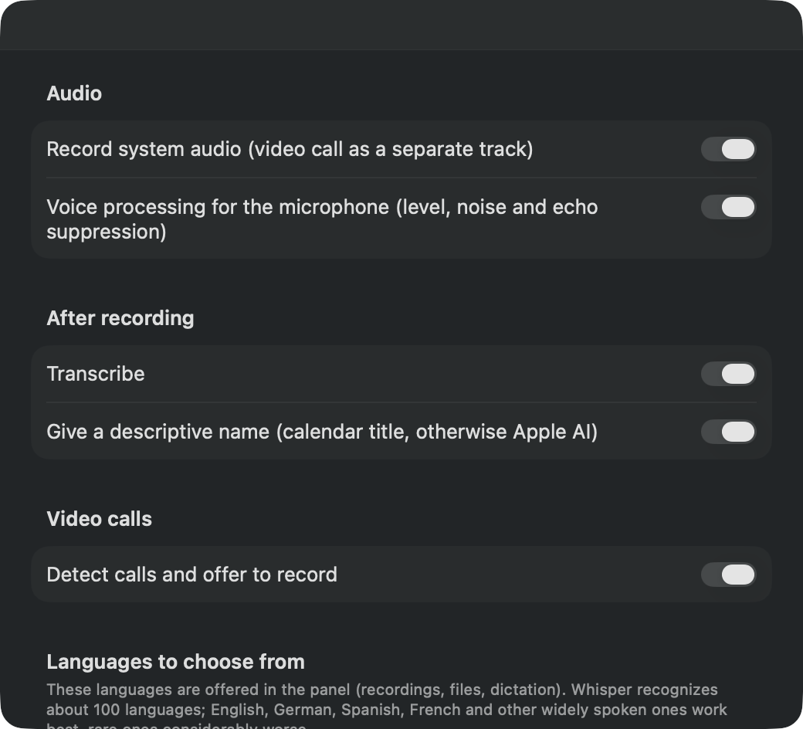
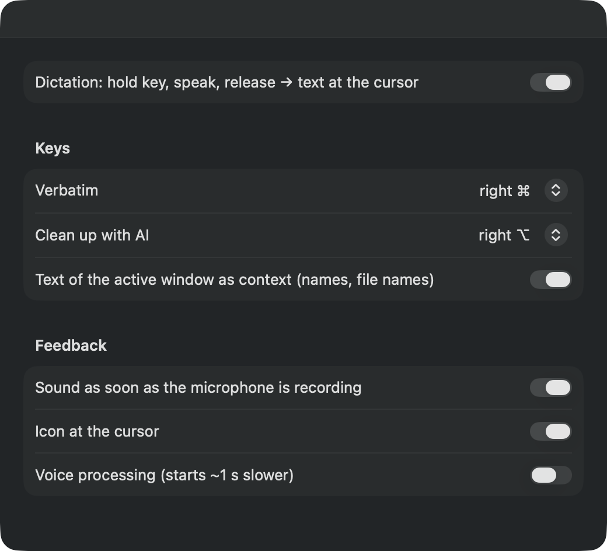
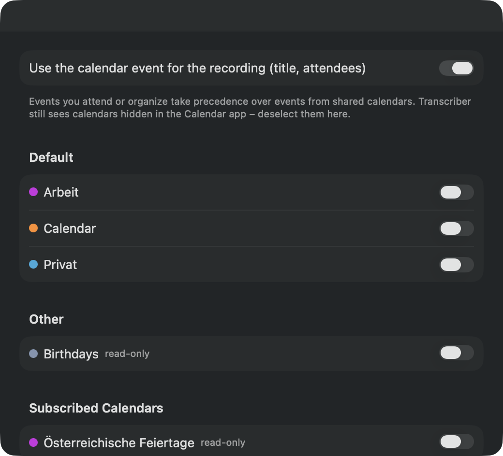

Fully local & private
Recording, speech recognition and speaker recognition run entirely on your Mac. No cloud, no account, no subscription, no license server. Audio never leaves your computer.
Meetings, calls and dictation – transcribed on your Mac. No cloud. A small, helpful tool in the menu bar that listens, takes notes and knows who said what.
curl -fsSL https://transcriber.teconomix.net/install.sh | bash
Version 0.6 · October 10, 2026 · macOS 14 or later
Record, transcribe, identify speakers, dictate – all on your Mac, nothing in someone else’s data center.
Recording, speech recognition and speaker recognition run entirely on your Mac. No cloud, no account, no subscription, no license server. Audio never leaves your computer.
One click in the menu bar. Microphone and system audio – that is, the other people on the call – are recorded as separate tracks.
Transcription uses Whisper large-v3-turbo on the Apple silicon GPU: one hour of audio, including speaker recognition, in about three to four minutes.
Speaker recognition (pyannote) with a voice database that learns: name a voice once, and it is recognized next time. Uncertain matches are marked with “(?)”.
Detects Teams, Zoom, Google Meet & co. and asks: “Record?” The recording stops automatically when the call ends. Your voice and the others’ are kept apart via separate tracks – in testing, even with speaker echo.
The current event becomes the file name, and its attendees are suggested when you name the voices.
Hold the right ⌘, speak, release: the text appears at the cursor – in Mail, Slack, your browser or Terminal. 10 seconds of dictation in about 0.2 s.
With the right ⌥, Apple Intelligence (on-device) cleans up filler words and punctuation.
From your calendar or via on-device AI:
2026-10-10 14-03 Q4 budget planningFolder watcher (optional): files in ~/Transcriber are transcribed automatically. Output as Markdown, JSON and SRT, a glossary for names and technical terms, a command line and an MCP server for AI agents such as Claude.
Three steps from installation to your first transcript.
One command in Terminal – the installer takes care of the rest.
Microphone and system audio. Optional: Accessibility for dictation and access to your calendar.
Click in the menu bar or hold the right ⌘. Shortly afterwards, the transcript is saved next to the recording.
A few understandable switches – just what you would expect from a Mac app.



One command, about ten minutes of patience – after that, everything runs offline.
curl -fsSL https://transcriber.teconomix.net/install.sh | bash
About Gatekeeper: The app is not (yet) notarized by Apple. The installer sets it up so that it starts anyway.
Uninstall: bash ~/.local/share/transcriber/uninstall.sh
No. Transcriber is open source under the MIT license and free of charge – no account, no subscription, no ads.
Only for installation. After that, everything works offline; recordings and transcripts stay on your Mac. If you agree, the app checks the current version number once a day to tell you about updates – nothing else.
Around 100 – all the languages the Whisper speech recognition model knows. German, English, Spanish and French are preselected; you can add more in the settings. Widely spoken languages work best, rare ones considerably less well.
That is your responsibility: get the consent of everyone involved before you record – depending on the country, this is required by law.